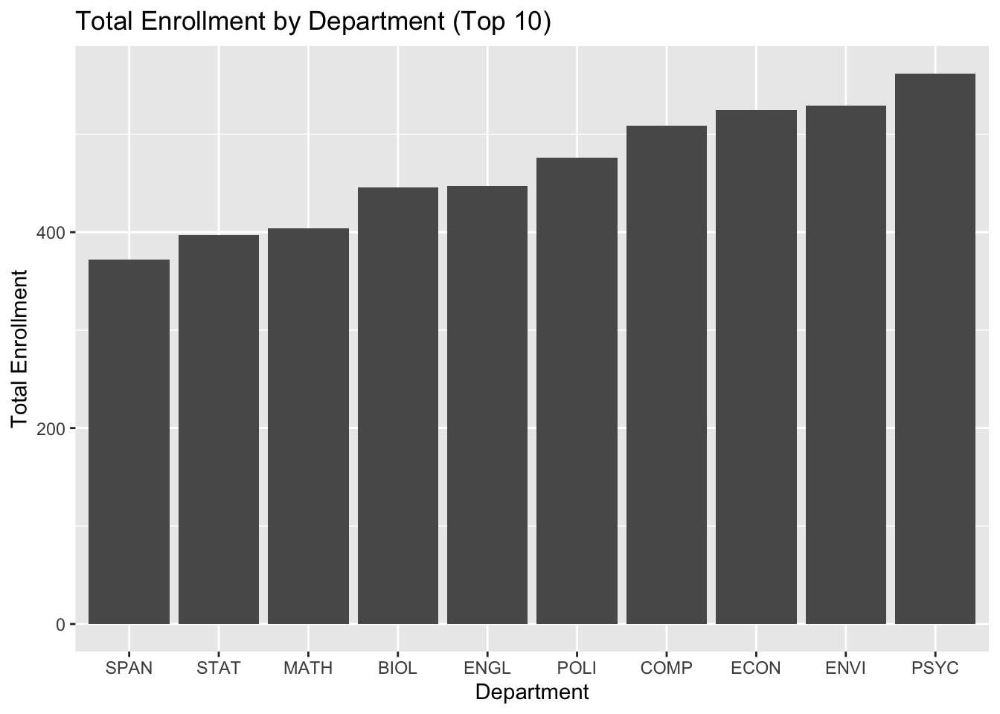

We’re in the last day of our “data preparation” unit:
19.2 Strings
In the previous class, we started discussing some considerations in working with special types of “categorical” variables: characters and factors which are:
Converting characters to factors (and factors to meaningful factors)–last time
When categorical information is stored as a character variable, the categories of interest might not be labeled or ordered in a meaningful way. We can fix that!
Strings–today!
When working with character strings, we might want to detect, replace, or extract certain patterns. For example, recall our data on courses:
Focusing on just the sem character variable, we might want to…
change FA to fall_ and SP to spring_
keep only courses taught in fall
split the variable into 2 new variables: semester (FA or SP) and year
Much more!–maybe in your projects or COMP/STAT 212
There are a lot of ways to process character variables. For example, we might have a variable that records the text for a sample of news articles. We might want to analyze things like the articles’ sentiments, word counts, typical word lengths, most common words, etc.
Essential Functions
The stringr package within tidyverse contains lots of functions to help process strings. We’ll focus on the most common. Letting x be a string variable…
function
arguments
returns
str_replace()
x, pattern, replacement
a modified string
str_replace_all()
x, pattern, replacement
a modified string
str_to_lower()
x
a modified string
str_sub()
x, start, end
a modified string
str_length()
x
a number
str_detect()
x, pattern
TRUE/FALSE
Example 1
Consider the following data with string variables :
sem area enroll instructor
1 SP2023 History 30 - people Ernesto Capello
2 FA2023 Math 20 - people Lori Ziegelmeier
3 SP2024 Anthro 25 - people Arjun Guneratne
Using only your intuition, use our str_ functions to complete the following. NOTE: You might be able to use other wrangling verbs in some cases, but focus on the new functions here.
# Define a new variable "num" that adds up the number of characters in the area labelclasses |>mutate(num =str_length(area))
sem area enroll instructor num
1 SP2023 History 30 - people Ernesto Capello 7
2 FA2023 Math 20 - people Lori Ziegelmeier 4
3 SP2024 Anthro 25 - people Arjun Guneratne 6
# Change the areas to "history", "math", "anthro" instead of "History", "Math", "Anthro"classes |>mutate(area =str_to_lower(area))
sem area enroll instructor
1 SP2023 history 30 - people Ernesto Capello
2 FA2023 math 20 - people Lori Ziegelmeier
3 SP2024 anthro 25 - people Arjun Guneratne
# Create a variable that id's which courses were taught in springclasses |>mutate(spring =str_detect(sem, "SP"))
sem area enroll instructor spring
1 SP2023 History 30 - people Ernesto Capello TRUE
2 FA2023 Math 20 - people Lori Ziegelmeier FALSE
3 SP2024 Anthro 25 - people Arjun Guneratne TRUE
# Change the semester labels to "fall2023", "spring2024", "spring2023"classes |>mutate(sem =str_replace(sem, "SP", "spring")) |>mutate(sem =str_replace(sem, "FA", "fall"))
sem area enroll instructor
1 spring2023 History 30 - people Ernesto Capello
2 fall2023 Math 20 - people Lori Ziegelmeier
3 spring2024 Anthro 25 - people Arjun Guneratne
# In the enroll variable, change all e's to 3's (just because?)classes |>mutate(enroll =str_replace_all(enroll, "e", "3"))
sem area enroll instructor
1 SP2023 History 30 - p3opl3 Ernesto Capello
2 FA2023 Math 20 - p3opl3 Lori Ziegelmeier
3 SP2024 Anthro 25 - p3opl3 Arjun Guneratne
# Use sem to create 2 new variables, one with only the semester (SP/FA) and 1 with the yearclasses |>mutate(semester =str_sub(sem, 1, 2),year =str_sub(sem, 3, 6))
sem area enroll instructor semester year
1 SP2023 History 30 - people Ernesto Capello SP 2023
2 FA2023 Math 20 - people Lori Ziegelmeier FA 2023
3 SP2024 Anthro 25 - people Arjun Guneratne SP 2024
Summary
Here’s what we learned about each function:
str_replace(x, pattern, replacement) finds the first part of x that matches the pattern and replaces it with replacement
str_replace_all(x, pattern, replacement) finds all instances in x that matches the pattern and replaces it with replacement
str_to_lower(x) converts all upper case letters in x to lower case
str_sub(x, start, end) only keeps a subset of characters in x, from start (a number indexing the first letter to keep) to end (a number indexing the last letter to keep)
str_length(x) records the number of characters in x
str_detect(x, pattern) is TRUE if x contains the given pattern and FALSE otherwise
19.2.1 Example 2
Suppose we only want the spring courses:
# How can we do this after mutating?classes |>mutate(spring =str_detect(sem, "SP"))
sem area enroll instructor spring
1 SP2023 History 30 - people Ernesto Capello TRUE
2 FA2023 Math 20 - people Lori Ziegelmeier FALSE
3 SP2024 Anthro 25 - people Arjun Guneratne TRUE
# We don't have to mutate first!classes |>filter(str_detect(sem, "SP"))
sem area enroll instructor
1 SP2023 History 30 - people Ernesto Capello
2 SP2024 Anthro 25 - people Arjun Guneratne
# Yet another wayclasses |>filter(!str_detect(sem, "FA"))
sem area enroll instructor
1 SP2023 History 30 - people Ernesto Capello
2 SP2024 Anthro 25 - people Arjun Guneratne
19.2.2 Example 3
Suppose we wanted to get separate columns for the first and last names of each course instructor in classes. Try doing this using str_sub(). But don’t try too long! Explain what trouble you ran into.
# Yet another way# classes |> # filter(str_sub(instructor))
I think I still need to figure out how does str_sub entirely works ### Example 4
In general, when we want to split a column into 2+ new columns, we can often use separate():
sem area enroll first last
1 SP2023 History 30 - people Ernesto Capello
2 FA2023 Math 20 - people Lori Ziegelmeier
3 SP2024 Anthro 25 - people Arjun Guneratne
# Sometimes the function can "intuit" how we want to separate the variableclasses |>separate(instructor, c("first", "last"))
sem area enroll first last
1 SP2023 History 30 - people Ernesto Capello
2 FA2023 Math 20 - people Lori Ziegelmeier
3 SP2024 Anthro 25 - people Arjun Guneratne
Separate enroll into 2 separate columns: students and people. (These columns don’t make sense this is just practice).
We separated sem into semester and year above using str_sub(). Why would this be hard using separate()?
Because it lacks a consistent single character delimeter to split on
When we want to split a column into 2+ new columns (or do other types of string processing), but there’s no consistent pattern by which to do this, we can use regular expressions (an optional topic):
Separate() is a more complex way to split strings when fixed positions are not enough. they basically define the split on the context of the string.
# (?<=[SP|FA]): any character *before* the split point is a "SP" or "FA"# (?=2): the first character *after* the split point is a 2classes |>separate(sem, c("semester", "year"),"(?<=[SP|FA])(?=2)")
semester year area enroll instructor
1 SP 2023 History 30 - people Ernesto Capello
2 FA 2023 Math 20 - people Lori Ziegelmeier
3 SP 2024 Anthro 25 - people Arjun Guneratne
# More general:# (?<=[a-zA-Z]): any character *before* the split point is a lower or upper case letter# (?=[0-9]): the first character *after* the split point is numberclasses |>separate(sem, c("semester", "year"),"(?<=[A-Z])(?=[0-9])")
semester year area enroll instructor
1 SP 2023 History 30 - people Ernesto Capello
2 FA 2023 Math 20 - people Lori Ziegelmeier
3 SP 2024 Anthro 25 - people Arjun Guneratne
19.3 Exercises
Exercise 1: Time slots
The courses data includes actual data scraped from Mac’s class schedule. (Thanks to Prof Leslie Myint for the scraping code!!)
If you want to learn how to scrape data, take COMP/STAT 212, Intermediate Data Science! NOTE: For simplicity, I removed classes that had “TBA” for the days.
courses <-read.csv("https://mac-stat.github.io/data/registrar.csv")# Check it outhead(courses)
number crn name days
1 AMST 112-01 10318 Introduction to African American Literature M W F
2 AMST 194-01 10073 Introduction to Asian American Studies M W F
3 AMST 194-F1 10072 What’s After White Empire - And Is It Already Here? T R
4 AMST 203-01 10646 Politics and Inequality: The American Welfare State M W F
5 AMST 205-01 10842 Trans Theories and Politics T R
6 AMST 209-01 10474 Civil Rights in the United States W
time room instructor avail_max
1 9:40 - 10:40 am MAIN 009 Daylanne English 3 / 20
2 1:10 - 2:10 pm MUSIC 219 Jake Nagasawa -4 / 16
3 3:00 - 4:30 pm HUM 214 Karin Aguilar-San Juan 0 / 14
4 9:40 - 10:40 am CARN 305 Lesley Lavery 3 / 25
5 3:00 - 4:30 pm MAIN 009 Myrl Beam -2 / 20
6 7:00 - 10:00 pm MAIN 010 Walter Greason -1 / 15
Use our more familiar wrangling tools to warm up.
# Construct a table that indicates the number of classes offered in each day/time slot# Print only the 6 most popular time slotscourses |>count(days, time) |>arrange(desc(n)) |>head()
days time n
1 M W F 10:50 - 11:50 am 76
2 T R 9:40 - 11:10 am 71
3 M W F 9:40 - 10:40 am 68
4 M W F 1:10 - 2:10 pm 66
5 T R 3:00 - 4:30 pm 62
6 T R 1:20 - 2:50 pm 59
Exercise 2: Prep the data
So that we can analyze it later, we want to wrangle the courses data:
Let’s get some enrollment info:
Split avail_max into 2 separate variables: avail and max.
Use avail and max to define a new variable called enroll. HINT: You’ll need as.numeric()
Split the course number into 3 separate variables: dept, number, and section. HINT: You can use separate() to split a variable into 3, not just 2 new variables.
Store this as courses_clean so that you can use it later.
dept number section crn name
1 AMST 112 01 10318 Introduction to African American Literature
2 AMST 194 01 10073 Introduction to Asian American Studies
3 AMST 194 F1 10072 What’s After White Empire - And Is It Already Here?
4 AMST 203 01 10646 Politics and Inequality: The American Welfare State
5 AMST 205 01 10842 Trans Theories and Politics
6 AMST 209 01 10474 Civil Rights in the United States
days time room instructor avail max enroll
1 M W F 9:40 - 10:40 am MAIN 009 Daylanne English 3 20 17
2 M W F 1:10 - 2:10 pm MUSIC 219 Jake Nagasawa -4 16 20
3 T R 3:00 - 4:30 pm HUM 214 Karin Aguilar-San Juan 0 14 14
4 M W F 9:40 - 10:40 am CARN 305 Lesley Lavery 3 25 22
5 T R 3:00 - 4:30 pm MAIN 009 Myrl Beam -2 20 22
6 W 7:00 - 10:00 pm MAIN 010 Walter Greason -1 15 16
Exercise 3: Courses by department
Using courses_clean…
# Identify the 6 departments that offered the most sectionscourses_clean |>count(dept) |>arrange(desc(n)) |>head()
# Identify the 6 departments with the longest average course titlescourses_clean |>mutate(length =str_length(name)) |>group_by(dept) |>summarize(avg_length =mean(length)) |>arrange(desc(avg_length)) |>head()
dept number section crn name days time
1 STAT 253 01 10806 Statistical Machine Learning T R 9:40 - 11:10 am
2 STAT 253 02 10807 Statistical Machine Learning T R 1:20 - 2:50 pm
3 STAT 253 03 10808 Statistical Machine Learning T R 3:00 - 4:30 pm
room instructor avail max enroll
1 THEATR 206 Alicia Johnson -3 20 23
2 THEATR 206 Alicia Johnson -3 20 23
3 THEATR 206 Alicia Johnson 2 20 18
Part b
Create a new dataset from courses_clean, named stat, that only includes STAT sections. In this dataset:
In the course names:
Remove “Introduction to” from any name.
Shorten “Statistical” to “Stat” where relevant.
Define a variable that records the start_time for the course.
Keep only the number, name, start_time, enroll columns.
number name start_time enroll
1 112 Data Science 3:00 27
2 112 Data Science 9:40 21
3 112 Data Science 1:20 25
4 125 Epidemiology 12:00 26
5 155 Stat Modeling 1:10 32
6 155 Stat Modeling 9:40 24
7 155 Stat Modeling 10:50 26
8 155 Stat Modeling 3:30 25
9 155 Stat Modeling 1:20 30
10 155 Stat Modeling 3:00 27
11 212 Intermediate Data Science 9:40 11
12 212 Intermediate Data Science 1:20 11
13 253 Stat Machine Learning 9:40 23
14 253 Stat Machine Learning 1:20 23
15 253 Stat Machine Learning 3:00 18
16 354 Probability 3:00 22
17 452 Correlated Data 9:40 7
18 452 Correlated Data 1:20 8
19 456 Projects in Data Science 9:40 11
Exercise 5: More cleaning
In the next exercises, we’ll dig into enrollments. Let’s get the data ready for that analysis here. Make the following changes to the courses_clean data. Because they have different enrollment structures, and we don’t want to compare apples and oranges, remove the following:
all sections in PE and INTD (interdisciplinary studies courses)
all music ensembles and dance practicums, i.e. all MUSI and THDA classes with numbers less than 100. HINT: !(dept == "MUSI" & as.numeric(number) < 100)
all lab sections. Be careful which variable you use here. For example, you don’t want to search by “Lab” and accidentally eliminate courses with words such as “Labor”.
Save the results as enrollments (don’t overwrite courses_clean).
dept number section crn name
1 AMST 112 01 10318 Introduction to African American Literature
2 AMST 194 01 10073 Introduction to Asian American Studies
3 AMST 194 F1 10072 What’s After White Empire - And Is It Already Here?
4 AMST 203 01 10646 Politics and Inequality: The American Welfare State
5 AMST 205 01 10842 Trans Theories and Politics
6 AMST 209 01 10474 Civil Rights in the United States
days time room instructor avail max enroll
1 M W F 9:40 - 10:40 am MAIN 009 Daylanne English 3 20 17
2 M W F 1:10 - 2:10 pm MUSIC 219 Jake Nagasawa -4 16 20
3 T R 3:00 - 4:30 pm HUM 214 Karin Aguilar-San Juan 0 14 14
4 M W F 9:40 - 10:40 am CARN 305 Lesley Lavery 3 25 22
5 T R 3:00 - 4:30 pm MAIN 009 Myrl Beam -2 20 22
6 W 7:00 - 10:00 pm MAIN 010 Walter Greason -1 15 16
Exercise 6: Enrollment & departments
Explore enrollments by department. You decide what research questions to focus on. Use both visual and numerical summaries.
20 Which one is the department with the highest total enrollment
library(ggplot2)enrollments |>group_by(dept) |>summarize(total_enrollment =sum(enroll, na.rm =TRUE)) |>arrange(desc(total_enrollment)) |>head(10) |># Focus on the top 10 for visualizationggplot(aes(x =reorder(dept, total_enrollment), y = total_enrollment)) +geom_col() +labs(title ="Total Enrollment by Department (Top 10)",x ="Department",y ="Total Enrollment")

Exercise 7: Enrollment & faculty
Let’s now explore enrollments by instructor. In doing so, we have to be cautious of cross-listed courses that are listed under multiple different departments. Uncomment the code lines in the chunk below for an example.
Commenting/Uncommenting Code
To comment/uncomment several lines of code at once, highlight them then click ctrl/cmd+shift+c.
enrollments |>filter(dept %in%c("STAT", "COMP"), number ==112, section =="01")
dept number section crn name days time
1 COMP 112 01 10248 Introduction to Data Science T R 3:00 - 4:30 pm
2 STAT 112 01 10249 Introduction to Data Science T R 3:00 - 4:30 pm
room instructor avail max enroll
1 OLRI 254 Brianna Heggeseth 1 28 27
2 OLRI 254 Brianna Heggeseth 1 28 27
Notice that these are the exact same section! In order to not double count an instructor’s enrollments, we can keep only the courses that have distinct()combinations of days, time, instructor values. Uncomment the code lines in the chunk below.
enrollments_2 <- enrollments |>distinct(days, time, instructor, .keep_all =TRUE)# NOTE: By default this keeps the first department alphabetically# That's fine because we won't use this to analyze department enrollments!enrollments_2 |>filter(instructor =="Brianna Heggeseth", name =="Introduction to Data Science")
dept number section crn name days time
1 COMP 112 01 10248 Introduction to Data Science T R 3:00 - 4:30 pm
room instructor avail max enroll
1 OLRI 254 Brianna Heggeseth 1 28 27
Now, explore enrollments by instructor. You decide what research questions to focus on. Use both visual and numerical summaries.
CAVEAT: The above code doesn’t deal with co-taught courses that have more than one instructor. Thus instructors that co-taught are recorded as a pair, and their co-taught enrollments aren’t added to their total enrollments. This is tough to get around with how the data were scraped as the instructor names are smushed together, not separated by a comma!
21 WHich insructor is the one that have the highest toal enrollment across their sections?
# A tibble: 1 × 2
instructor total_enrollment
<chr> <dbl>
1 Andrew Beveridge 88
Optional extra practice
# Make a bar plot showing the number of night courses by day of the week# Use courses_clean
Dig Deeper: regex
Example 4 gave 1 small example of a regular expression.
These are handy when we want process a string variable, but there’s no consistent pattern by which to do this. You must think about the structure of the string and how you can use regular expressions to capture the patterns you want (and exclude the patterns you don’t want).
For example, how would you describe the pattern of a 10-digit phone number? Limit yourself to just a US phone number for now.
The first 3 digits are the area code.
The next 3 digits are the exchange code.
The last 4 digits are the subscriber number.
Thus, a regular expression for a US phone number could be:
[:digit:]{3}-[:digit:]{3}-[:digit:]{4} which limits you to XXX-XXX-XXXX pattern or
\\([:digit:]{3}\\) [:digit:]{3}-[:digit:]{4} which limits you to (XXX) XXX-XXXX pattern or
[:digit:]{3}\\.[:digit:]{3}\\.[:digit:]{4} which limits you to XXX.XXX.XXXX pattern
The following would include the three patterns above in addition to the XXXXXXXXXX pattern (no dashes or periods): - [\\(]*[:digit:]{3}[-.\\)]*[:digit:]{3}[-.]*[:digit:]{4}
In order to write a regular expression, you first need to consider what patterns you want to include and exclude.
Work through the following examples, and the tutorial after them to learn about the syntax.
EXAMPLES
# Define some strings to play around withexample <-"The quick brown fox jumps over the lazy dog."
str_replace(example, "quick", "really quick")
[1] "The really quick brown fox jumps over the lazy dog."
str_replace_all(example, "(fox|dog)", "****") # | reads as OR
[1] "The quick brown **** jumps over the lazy ****."
str_replace_all(example, "(fox|dog).", "****") # "." for any character
[1] "The quick brown ****jumps over the lazy ****"
str_replace_all(example, "(fox|dog)\\.$", "****") # at end of sentence only, "\\." only for a period
[1] "The quick brown fox jumps over the lazy ****"
str_replace_all(example, "the", "a") # case-sensitive only matches one
[1] "The quick brown fox jumps over a lazy dog."
str_replace_all(example, "[Tt]he", "a") # # will match either t or T; could also make "a" conditional on capitalization of t
[1] "a quick brown fox jumps over a lazy dog."
str_replace_all(example, "[Tt]he", "a") # first match only
[1] "a quick brown fox jumps over a lazy dog."
# More examplesexample2 <-"Two roads diverged in a yellow wood, / And sorry I could not travel both / And be one traveler, long I stood / And looked down one as far as I could"example3 <-"This is a test"# Store the examples in 1 placeexamples <-c(example, example2, example3)
pat <-"[^aeiouAEIOU ]{3}"# Regular expression for three straight consonants. Note that I've excluded spaces as wellstr_detect(examples, pat) # TRUE/FALSE if it detects pattern
[1] TRUE TRUE FALSE
str_subset(examples, pat) # Pulls out those that detects pattern
[1] "The quick brown fox jumps over the lazy dog."
[2] "Two roads diverged in a yellow wood, / And sorry I could not travel both / And be one traveler, long I stood / And looked down one as far as I could"
pat2 <-"[^aeiouAEIOU ][aeiouAEIOU]{2}[^aeiouAEIOU ]{1}"# consonant followed by two vowels followed by a consonantstr_extract(example2, pat2) # extract first match
[1] "road"
str_extract_all(example2, pat2, simplify =TRUE) # extract all matches
Try out this interactive tutorial. Note that neither the tutorial nor regular expressions more generally are specific to R, but it still illustrates the main ideas of regular expressions.
21.1 Solutions
Click for Solutions
21.1.1 Example 1
# Define a new variable "num" that adds up the number of characters in the area labelclasses |>mutate(num =str_length(area))
sem area enroll instructor num
1 SP2023 History 30 - people Ernesto Capello 7
2 FA2023 Math 20 - people Lori Ziegelmeier 4
3 SP2024 Anthro 25 - people Arjun Guneratne 6
# Change the areas to "history", "math", "anthro"classes |>mutate(area =str_to_lower(area))
sem area enroll instructor
1 SP2023 history 30 - people Ernesto Capello
2 FA2023 math 20 - people Lori Ziegelmeier
3 SP2024 anthro 25 - people Arjun Guneratne
# Create a variable that id's which courses were taught in spring classes |>mutate(spring =str_detect(sem, "SP"))
sem area enroll instructor spring
1 SP2023 History 30 - people Ernesto Capello TRUE
2 FA2023 Math 20 - people Lori Ziegelmeier FALSE
3 SP2024 Anthro 25 - people Arjun Guneratne TRUE
# Change the semester labels to "fall2023", "spring2024", "spring2023"classes |>mutate(sem =str_replace(sem, "SP", "spring")) |>mutate(sem =str_replace(sem, "FA", "fall"))
sem area enroll instructor
1 spring2023 History 30 - people Ernesto Capello
2 fall2023 Math 20 - people Lori Ziegelmeier
3 spring2024 Anthro 25 - people Arjun Guneratne
# In the enroll variable, change all e's to 3's (just because?)classes |>mutate(enroll =str_replace_all(enroll, "e", "3"))
sem area enroll instructor
1 SP2023 History 30 - p3opl3 Ernesto Capello
2 FA2023 Math 20 - p3opl3 Lori Ziegelmeier
3 SP2024 Anthro 25 - p3opl3 Arjun Guneratne
# Use sem to create 2 new variables, one with only the semester (SP/FA) and 1 with the yearclasses |>mutate(semester =str_sub(sem, 1, 2),year =str_sub(sem, 3, 6))
sem area enroll instructor semester year
1 SP2023 History 30 - people Ernesto Capello SP 2023
2 FA2023 Math 20 - people Lori Ziegelmeier FA 2023
3 SP2024 Anthro 25 - people Arjun Guneratne SP 2024
21.1.2 Example 2
# How can we do this after mutating?classes |>mutate(spring =str_detect(sem, "SP")) |>filter(spring ==TRUE)
sem area enroll instructor spring
1 SP2023 History 30 - people Ernesto Capello TRUE
2 SP2024 Anthro 25 - people Arjun Guneratne TRUE
Exercise 1: Popular time slots
# Construct a table that indicates the number of classes offered in each day/time slot# Print only the 6 most popular time slotscourses |>count(days, time) |>arrange(desc(n)) |>head()
days time n
1 M W F 10:50 - 11:50 am 76
2 T R 9:40 - 11:10 am 71
3 M W F 9:40 - 10:40 am 68
4 M W F 1:10 - 2:10 pm 66
5 T R 3:00 - 4:30 pm 62
6 T R 1:20 - 2:50 pm 59
dept number section crn name
1 AMST 112 01 10318 Introduction to African American Literature
2 AMST 194 01 10073 Introduction to Asian American Studies
3 AMST 194 F1 10072 What’s After White Empire - And Is It Already Here?
4 AMST 203 01 10646 Politics and Inequality: The American Welfare State
5 AMST 205 01 10842 Trans Theories and Politics
6 AMST 209 01 10474 Civil Rights in the United States
days time room instructor avail max enroll
1 M W F 9:40 - 10:40 am MAIN 009 Daylanne English 3 20 17
2 M W F 1:10 - 2:10 pm MUSIC 219 Jake Nagasawa -4 16 20
3 T R 3:00 - 4:30 pm HUM 214 Karin Aguilar-San Juan 0 14 14
4 M W F 9:40 - 10:40 am CARN 305 Lesley Lavery 3 25 22
5 T R 3:00 - 4:30 pm MAIN 009 Myrl Beam -2 20 22
6 W 7:00 - 10:00 pm MAIN 010 Walter Greason -1 15 16
Exercise 3: Courses offered by department
# Identify the 6 departments that offered the most sectionscourses_clean |>count(dept) |>arrange(desc(n)) |>head()
# Identify the 6 departments with the longest average course titlescourses_clean |>mutate(length =str_length(name)) |>group_by(dept) |>summarize(avg_length =mean(length)) |>arrange(desc(avg_length)) |>head()
dept number section crn name days time
1 STAT 253 01 10806 Statistical Machine Learning T R 9:40 - 11:10 am
2 STAT 253 02 10807 Statistical Machine Learning T R 1:20 - 2:50 pm
3 STAT 253 03 10808 Statistical Machine Learning T R 3:00 - 4:30 pm
room instructor avail max enroll
1 THEATR 206 Alicia Johnson -3 20 23
2 THEATR 206 Alicia Johnson -3 20 23
3 THEATR 206 Alicia Johnson 2 20 18
dept number section crn name
1 AMST 112 01 10318 Introduction to African American Literature
2 AMST 194 01 10073 Introduction to Asian American Studies
3 AMST 194 F1 10072 What’s After White Empire - And Is It Already Here?
4 AMST 203 01 10646 Politics and Inequality: The American Welfare State
5 AMST 205 01 10842 Trans Theories and Politics
6 AMST 209 01 10474 Civil Rights in the United States
days time room instructor avail max enroll
1 M W F 9:40 - 10:40 am MAIN 009 Daylanne English 3 20 17
2 M W F 1:10 - 2:10 pm MUSIC 219 Jake Nagasawa -4 16 20
3 T R 3:00 - 4:30 pm HUM 214 Karin Aguilar-San Juan 0 14 14
4 M W F 9:40 - 10:40 am CARN 305 Lesley Lavery 3 25 22
5 T R 3:00 - 4:30 pm MAIN 009 Myrl Beam -2 20 22
6 W 7:00 - 10:00 pm MAIN 010 Walter Greason -1 15 16
Optional extra practice
# Make a bar plot showing the number of night courses by day of the week.courses_clean |>filter(str_detect(time, "7:00")) |>ggplot(aes(x = days)) +geom_bar()
Source Code
---title: "Strings"number-sections: trueexecute: warning: falsefig-env: 'figure'fig-pos: 'h'fig-align: centercode-fold: false---::: {.callout-caution title="Learning Goals"}- Learn some fundamentals of working with strings of text data.- Learn functions to search and replace, detect patterns, locate patterns, extract patterns, and separate text with the `stringr` package.:::::: {.callout-note title="Additional Resources"}For more information about the topics covered in this chapter, refer to the resources below:- [Working with strings (YouTube)](https://www.youtube.com/watch?v=__pJ_u94LZg&t=52s) by Lisa Lendway- [strings cheat sheet (pdf)](https://raw.githubusercontent.com/rstudio/cheatsheets/main/strings.pdf)- [Strings (html)](https://r4ds.hadley.nz/strings.html) by Wickham, Çetinkaya-Rundel, & Grolemund- [Regular expressions (html)](https://mdsr-book.github.io/mdsr2e/ch-text.html#regular-expressions-using-macbeth) by Baumer, Kaplan, and Horton- [RegExplain RStudio addin tool (html)](https://www.garrickadenbuie.com/project/regexplain/) (Garrick Aden-Buie)- [regexr exploration tool (html)](https://regexr.com/):::## Review**WHERE ARE WE?**We're in the *last day* of our "data preparation" unit:## StringsIn the previous class, we started discussing some considerations in working with special types of "categorical" variables: *characters* and *factors* which are:1. **Converting characters to factors (and factors to meaningful factors)**--last time\ When categorical information is stored as a *character* variable, the categories of interest might not be labeled or ordered in a meaningful way. We can fix that!2. **Strings**--today!\ When working with character strings, we might want to detect, replace, or extract certain *patterns*. For example, recall our data on `courses`:```{r echo = FALSE}courses_old <- read.csv("https://mac-stat.github.io/data/courses.csv")# Check out the datahead(courses_old)# Check out the structure of each variable# Many of these are characters!str(courses_old)```Focusing on just the `sem` character variable, we might want to...- change `FA` to `fall_` and `SP` to `spring_`- keep only courses taught in fall- split the variable into 2 new variables: `semester` (`FA` or `SP`) and `year`3. Much more!--maybe in your projects or COMP/STAT 212\ There are a lot of ways to process character variables. For example, we might have a variable that records the text for a sample of news articles. We might want to analyze things like the articles' *sentiments*, word counts, typical word lengths, most common words, etc.### Essential Functions {-}The `stringr` package within `tidyverse` contains lots of functions to help process strings. We'll focus on the most common. Letting `x` be a string variable...| function | arguments | returns ||:--------------------|:--------------------------|:------------------|| `str_replace()` | `x, pattern, replacement` | a modified string || `str_replace_all()` | `x, pattern, replacement` | a modified string || `str_to_lower()` | `x` | a modified string || `str_sub()` | `x, start, end` | a modified string || `str_length()` | `x` | a number || `str_detect()` | `x, pattern` | TRUE/FALSE |### Example 1 {-}Consider the following data with string variables :```{r}library(tidyverse)classes <-data.frame(sem =c("SP2023", "FA2023", "SP2024"),area =c("History", "Math", "Anthro"),enroll =c("30 - people", "20 - people", "25 - people"),instructor =c("Ernesto Capello", "Lori Ziegelmeier", "Arjun Guneratne"))classes```Using only your intuition, use our `str_` functions to complete the following. NOTE: You might be able to use other wrangling verbs in some cases, but focus on the new functions here.```{r}# Define a new variable "num" that adds up the number of characters in the area labelclasses |>mutate(num =str_length(area))``````{r}# Change the areas to "history", "math", "anthro" instead of "History", "Math", "Anthro"classes |>mutate(area =str_to_lower(area))``````{r}# Create a variable that id's which courses were taught in springclasses |>mutate(spring =str_detect(sem, "SP"))``````{r}# Change the semester labels to "fall2023", "spring2024", "spring2023"classes |>mutate(sem =str_replace(sem, "SP", "spring")) |>mutate(sem =str_replace(sem, "FA", "fall"))``````{r}# In the enroll variable, change all e's to 3's (just because?)classes |>mutate(enroll =str_replace_all(enroll, "e", "3"))``````{r}# Use sem to create 2 new variables, one with only the semester (SP/FA) and 1 with the yearclasses |>mutate(semester =str_sub(sem, 1, 2),year =str_sub(sem, 3, 6))```### Summary {-}Here's what we learned about each function:- `str_replace(x, pattern, replacement)` finds the *first* part of `x` that matches the `pattern` and replaces it with `replacement`- `str_replace_all(x, pattern, replacement)` finds *all* instances in `x` that matches the `pattern` and replaces it with `replacement`- `str_to_lower(x)` converts all upper case letters in `x` to lower case- `str_sub(x, start, end)` only keeps a subset of characters in `x`, from `start` (a number indexing the first letter to keep) to `end` (a number indexing the last letter to keep)- `str_length(x)` records the number of characters in `x`- `str_detect(x, pattern)` is TRUE if `x` contains the given `pattern` and FALSE otherwise### Example 2Suppose we *only* want the spring courses:```{r}# How can we do this after mutating?classes |>mutate(spring =str_detect(sem, "SP"))``````{r}# We don't have to mutate first!classes |>filter(str_detect(sem, "SP"))``````{r}# Yet another wayclasses |>filter(!str_detect(sem, "FA"))```### Example 3Suppose we wanted to get separate columns for the first and last names of each course instructor in `classes`. Try doing this using `str_sub()`. But don't try too long! Explain what trouble you ran into.```{r}# Yet another way# classes |> # filter(str_sub(instructor))```I think I still need to figure out how does str_sub entirely works### Example 4In general, when we want to split a column into 2+ new columns, we can often use `separate()`:```{r}classes |>separate(instructor, c("first", "last"), sep =" ")``````{r}# Sometimes the function can "intuit" how we want to separate the variableclasses |>separate(instructor, c("first", "last"))```a. Separate enroll into 2 separate columns: `students` and `people`. (These columns don't make sense this is just practice).```{r}# classes |> # separate(___, c(___, ___), sep = "___")```b. We separated `sem` into semester and year above using `str_sub()`. Why would this be hard using `separate()`?Because it lacks a consistent single character delimeter to split onc. When we want to split a column into 2+ new columns (or do other types of string processing), but there's no consistent pattern by which to do this, we can use *regular expressions* (an optional topic):Separate() is a more complex way to split strings when fixed positions are not enough. they basically define the split on the context of the string.```{r}# (?<=[SP|FA]): any character *before* the split point is a "SP" or "FA"# (?=2): the first character *after* the split point is a 2classes |>separate(sem, c("semester", "year"),"(?<=[SP|FA])(?=2)")``````{r}# More general:# (?<=[a-zA-Z]): any character *before* the split point is a lower or upper case letter# (?=[0-9]): the first character *after* the split point is numberclasses |>separate(sem, c("semester", "year"),"(?<=[A-Z])(?=[0-9])")```## Exercises### Exercise 1: Time slots {.unnumbered}The `courses` data includes *actual* data scraped from Mac's [class schedule](https://macadmsys.macalester.edu/macssb/customPage/page/classSchedule). (Thanks to Prof Leslie Myint for the scraping code!!)If you want to learn how to scrape data, take COMP/STAT 212, Intermediate Data Science! NOTE: For simplicity, I removed classes that had "TBA" for the `days`.```{r}courses <-read.csv("https://mac-stat.github.io/data/registrar.csv")# Check it outhead(courses)```Use our more familiar wrangling tools to warm up.```{r}# Construct a table that indicates the number of classes offered in each day/time slot# Print only the 6 most popular time slotscourses |>count(days, time) |>arrange(desc(n)) |>head()```### Exercise 2: Prep the data {.unnumbered}So that we can analyze it later, we want to wrangle the `courses` data:- Let's get some enrollment info: - Split `avail_max` into 2 separate variables: `avail` and `max`. - Use `avail` and `max` to define a new variable called `enroll`. HINT: You'll need `as.numeric()`- Split the course `number` into 3 separate variables: `dept`, `number`, and `section`. HINT: You can use `separate()` to split a variable into 3, not just 2 new variables.Store this as `courses_clean` so that you can use it later.```{r}courses_clean <- courses |>separate(avail_max, c("avail", "max"), sep =" / ") |>mutate(enroll =as.numeric(max) -as.numeric(avail)) |>separate(number, c("dept", "number", "section"))head(courses_clean)```### Exercise 3: Courses by department {.unnumbered}Using `courses_clean`...```{r}# Identify the 6 departments that offered the most sectionscourses_clean |>count(dept) |>arrange(desc(n)) |>head()# Identify the 6 departments with the longest average course titlescourses_clean |>mutate(length =str_length(name)) |>group_by(dept) |>summarize(avg_length =mean(length)) |>arrange(desc(avg_length)) |>head()```### Exercise 4: STAT courses {.unnumbered}#### Part a {.unnumbered}Get a subset of `courses_clean` that only includes courses taught by Alicia Johnson.```{r}courses_clean |>filter(str_detect(instructor, "Alicia Johnson")) ```#### Part b {.unnumbered}Create a new dataset from `courses_clean`, named `stat`, that only includes STAT sections. In this dataset:- In the course names: - Remove "Introduction to" from any name. - Shorten "Statistical" to "Stat" where relevant.- Define a variable that records the `start_time` for the course.- Keep only the `number, name, start_time, enroll` columns.- The result should have 19 rows and 4 columns.```{r}stat <- courses_clean |>filter(dept =="STAT") |>mutate(name =str_replace(name, "Introduction to ", "")) |>mutate(name =str_replace(name, "Statistical", "Stat")) |>mutate(start_time =str_sub(time, 1, 5)) |>select(number, name, start_time, enroll)stat```### Exercise 5: More cleaning {.unnumbered}In the next exercises, we'll dig into enrollments. Let's get the data ready for that analysis here. Make the following changes to the `courses_clean` data. Because they have different enrollment structures, and we don't want to compare apples and oranges, *remove* the following:- all sections in `PE` and `INTD` (interdisciplinary studies courses)- all music ensembles and dance practicums, i.e. all MUSI and THDA classes with numbers less than 100. HINT: `!(dept == "MUSI" & as.numeric(number) < 100)`- all lab sections. Be careful which variable you use here. For example, you don't want to search by "Lab" and accidentally eliminate courses with words such as "Labor".Save the results as `enrollments` (don't overwrite `courses_clean`).```{r}enrollments <- courses_clean |>filter(dept !="PE", dept !="INTD") |>filter(!(dept =="MUSI"&as.numeric(number) <100)) |>filter(!(dept =="THDA"&as.numeric(number) <100)) |>filter(!str_detect(section, "L"))head(enrollments)```### Exercise 6: Enrollment & departments {.unnumbered}Explore enrollments by department. *You* decide what research questions to focus on. Use both visual and numerical summaries.# Which one is the department with the highest total enrollment```{r}enrollments |>group_by(dept) |>summarize(total_enrollment =sum(enroll, na.rm =TRUE),n_sections =n()) |>arrange(desc(total_enrollment))``````{r}library(ggplot2)enrollments |>group_by(dept) |>summarize(total_enrollment =sum(enroll, na.rm =TRUE)) |>arrange(desc(total_enrollment)) |>head(10) |># Focus on the top 10 for visualizationggplot(aes(x =reorder(dept, total_enrollment), y = total_enrollment)) +geom_col() +labs(title ="Total Enrollment by Department (Top 10)",x ="Department",y ="Total Enrollment")```### Exercise 7: Enrollment & faculty {.unnumbered}Let's now explore enrollments by instructor. In doing so, we have to be cautious of cross-listed courses that are listed under multiple different departments. Uncomment the code lines in the chunk below for an example.::: {.callout-tip title="Commenting/Uncommenting Code"}To comment/uncomment several lines of code at once, highlight them then click <kbd>ctrl/cmd+shift+c</kbd>.:::```{r}enrollments |>filter(dept %in%c("STAT", "COMP"), number ==112, section =="01")```Notice that these are the exact same section! In order to not double count an instructor's enrollments, we can keep only the courses that have `distinct()` *combinations* of `days, time, instructor` values. Uncomment the code lines in the chunk below.```{r}enrollments_2 <- enrollments |>distinct(days, time, instructor, .keep_all =TRUE)# NOTE: By default this keeps the first department alphabetically# That's fine because we won't use this to analyze department enrollments!enrollments_2 |>filter(instructor =="Brianna Heggeseth", name =="Introduction to Data Science")```*Now*, explore enrollments by instructor. *You* decide what research questions to focus on. Use both visual and numerical summaries.CAVEAT: The above code doesn't deal with *co-taught* courses that have more than one instructor. Thus instructors that co-taught are recorded as a pair, and their co-taught enrollments aren't added to their total enrollments. This is tough to get around with how the data were scraped as the instructor names are smushed together, not separated by a comma!# WHich insructor is the one that have the highest toal enrollment across their sections?```{r}enrollments_2 |>group_by(instructor) |>summarize(total_enrollment =sum(enroll, na.rm =TRUE)) |>arrange(desc(total_enrollment)) |>head(1)```### Optional extra practice {.unnumbered}```{r}# Make a bar plot showing the number of night courses by day of the week# Use courses_clean```### Dig Deeper: regex {.unnumbered}Example 4 gave 1 small example of a regular expression.These are handy when we want process a string variable, but there's no consistent pattern by which to do this. You must think about the structure of the string and how you can use regular expressions to capture the patterns you want (and exclude the patterns you don't want).For example, how would you describe the pattern of a 10-digit phone number? Limit yourself to just a US phone number for now.- The first 3 digits are the area code.- The next 3 digits are the exchange code.- The last 4 digits are the subscriber number.Thus, a regular expression for a US phone number could be:- `[:digit:]{3}-[:digit:]{3}-[:digit:]{4}` which limits you to XXX-XXX-XXXX pattern or- `\\([:digit:]{3}\\) [:digit:]{3}-[:digit:]{4}` which limits you to (XXX) XXX-XXXX pattern or- `[:digit:]{3}\\.[:digit:]{3}\\.[:digit:]{4}` which limits you to XXX.XXX.XXXX patternThe following would include the three patterns above in addition to the XXXXXXXXXX pattern (no dashes or periods): - `[\\(]*[:digit:]{3}[-.\\)]*[:digit:]{3}[-.]*[:digit:]{4}`In order to write a regular expression, you first need to consider what patterns you want to include and exclude.Work through the following examples, and the tutorial after them to learn about the syntax.**EXAMPLES**```{r}# Define some strings to play around withexample <-"The quick brown fox jumps over the lazy dog."``````{r}str_replace(example, "quick", "really quick")``````{r}str_replace_all(example, "(fox|dog)", "****") # | reads as OR``````{r}str_replace_all(example, "(fox|dog).", "****") # "." for any character``````{r}str_replace_all(example, "(fox|dog)\\.$", "****") # at end of sentence only, "\\." only for a period``````{r}str_replace_all(example, "the", "a") # case-sensitive only matches one``````{r}str_replace_all(example, "[Tt]he", "a") # # will match either t or T; could also make "a" conditional on capitalization of t``````{r}str_replace_all(example, "[Tt]he", "a") # first match only``````{r}# More examplesexample2 <-"Two roads diverged in a yellow wood, / And sorry I could not travel both / And be one traveler, long I stood / And looked down one as far as I could"example3 <-"This is a test"# Store the examples in 1 placeexamples <-c(example, example2, example3)``````{r}pat <-"[^aeiouAEIOU ]{3}"# Regular expression for three straight consonants. Note that I've excluded spaces as wellstr_detect(examples, pat) # TRUE/FALSE if it detects pattern``````{r}str_subset(examples, pat) # Pulls out those that detects pattern``````{r}pat2 <-"[^aeiouAEIOU ][aeiouAEIOU]{2}[^aeiouAEIOU ]{1}"# consonant followed by two vowels followed by a consonantstr_extract(example2, pat2) # extract first match``````{r}str_extract_all(example2, pat2, simplify =TRUE) # extract all matches```**TUTORIAL**Try out this [interactive tutorial](https://regexone.com/). Note that neither the tutorial nor regular expressions more generally are specific to `R`, but it still illustrates the main ideas of regular expressions.## Solutions<details><summary>Click for Solutions</summary>### Example 1```{r}# Define a new variable "num" that adds up the number of characters in the area labelclasses |>mutate(num =str_length(area))# Change the areas to "history", "math", "anthro"classes |>mutate(area =str_to_lower(area))# Create a variable that id's which courses were taught in spring classes |>mutate(spring =str_detect(sem, "SP"))# Change the semester labels to "fall2023", "spring2024", "spring2023"classes |>mutate(sem =str_replace(sem, "SP", "spring")) |>mutate(sem =str_replace(sem, "FA", "fall"))# In the enroll variable, change all e's to 3's (just because?)classes |>mutate(enroll =str_replace_all(enroll, "e", "3"))# Use sem to create 2 new variables, one with only the semester (SP/FA) and 1 with the yearclasses |>mutate(semester =str_sub(sem, 1, 2),year =str_sub(sem, 3, 6))```### Example 2```{r}# How can we do this after mutating?classes |>mutate(spring =str_detect(sem, "SP")) |>filter(spring ==TRUE)```### Exercise 1: Popular time slots {.unnumbered}```{r}# Construct a table that indicates the number of classes offered in each day/time slot# Print only the 6 most popular time slotscourses |>count(days, time) |>arrange(desc(n)) |>head()```### Exercise 2: Prep the data {.unnumbered}```{r}courses_clean <- courses |>separate(avail_max, c("avail", "max"), sep =" / ") |>mutate(enroll =as.numeric(max) -as.numeric(avail)) |>separate(number, c("dept", "number", "section"))head(courses_clean)```### Exercise 3: Courses offered by department {.unnumbered}```{r}# Identify the 6 departments that offered the most sectionscourses_clean |>count(dept) |>arrange(desc(n)) |>head()# Identify the 6 departments with the longest average course titlescourses_clean |>mutate(length =str_length(name)) |>group_by(dept) |>summarize(avg_length =mean(length)) |>arrange(desc(avg_length)) |>head()```### Exercise 4: STAT courses {.unnumbered}#### Part a {.unnumbered}```{r}courses_clean |>filter(str_detect(instructor, "Alicia Johnson")) ```#### Part b {.unnumbered}```{r}stat <- courses_clean |>filter(dept =="STAT") |>mutate(name =str_replace(name, "Introduction to ", "")) |>mutate(name =str_replace(name, "Statistical", "Stat")) |>mutate(start_time =str_sub(time, 1, 5)) |>select(number, name, start_time, enroll)statdim(stat)```### Exercise 5: More cleaning {.unnumbered}```{r}enrollments <- courses_clean |>filter(dept !="PE", dept !="INTD") |>filter(!(dept =="MUSI"&as.numeric(number) <100)) |>filter(!(dept =="THDA"&as.numeric(number) <100)) |>filter(!str_detect(section, "L"))head(enrollments)```### Optional extra practice {.unnumbered}```{r}# Make a bar plot showing the number of night courses by day of the week.courses_clean |>filter(str_detect(time, "7:00")) |>ggplot(aes(x = days)) +geom_bar()```</details>